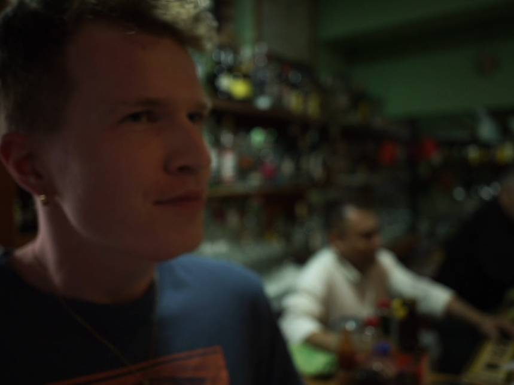
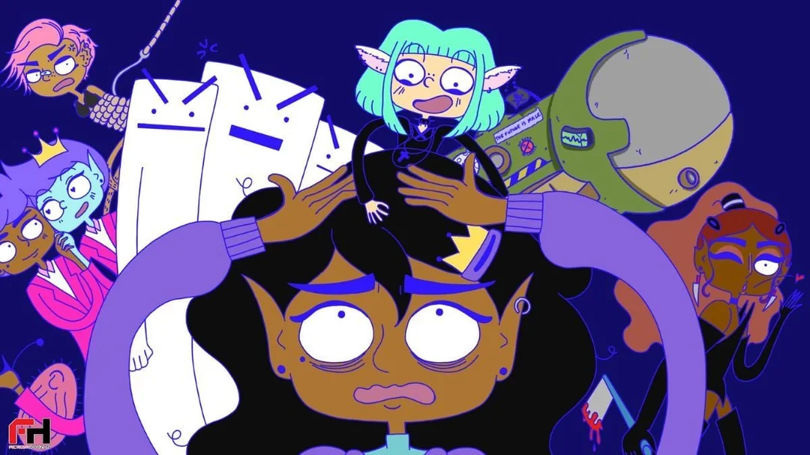
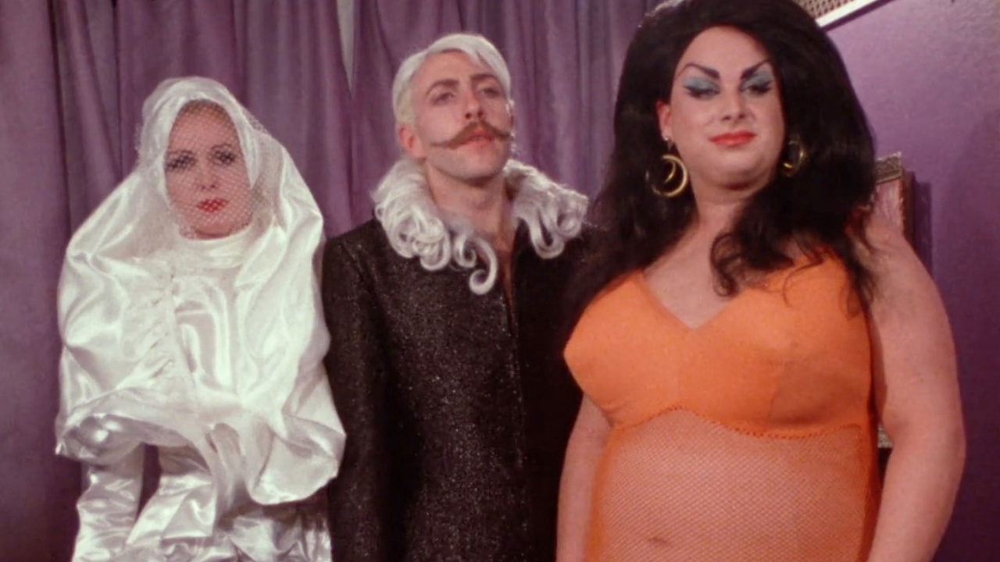

New to this website are little film reviews. The year is still ongoing so this list will grow! I decided not to write down scores out of 10 because films aren't about that actually
Rewatched this delightful film with Mexicans asking if it's all real and they were like yep. Actually a delightful film
Standard gay film, was pissed off by one of them randomly acting like a dickhead at the end with no warning
Pretty people gazing at each other for two hours, I didn't love it
So good. Also the most horrible film I've ever watched. I'm not good with body horror so I'm not sure what I was doing watching this
I was so nervous during all of this film because it's so tense but the ending was so beautiful. A Danish queer coming of age film, not an easy watch
My friends Clarer and Miiel made this film!! And I'm in it!! I have two lines speaking in spanish and they are terrible, I am a terrible actor. My apologies to the directors and the viewers
Gripping, amazing film about public figures exploring their kink of sex in public. Cheesy film noir soundtrack makes it so funny and enjoyable to watch. I watched it at the Berlinale and I loved it
Mongay always do a showing of the winner of the Teddy Award and this year it was this wacky animated film about lesbians in space. At parts it's hilarious but I did roll my eyes a few times
Absolutely insane film, there are no words to describe it. It goes way too far and is hugely inappropriate and very disgusting. I loved it and was hugely entertained for the entire thing
Hilarious film, one of the OG horror films where a bunch of tropes come from. I love how Count Orlok travels across Europe in a coffin via raft just so he can suck a German lady's blood. Also this vampire stuff is so sexually charged it's insane